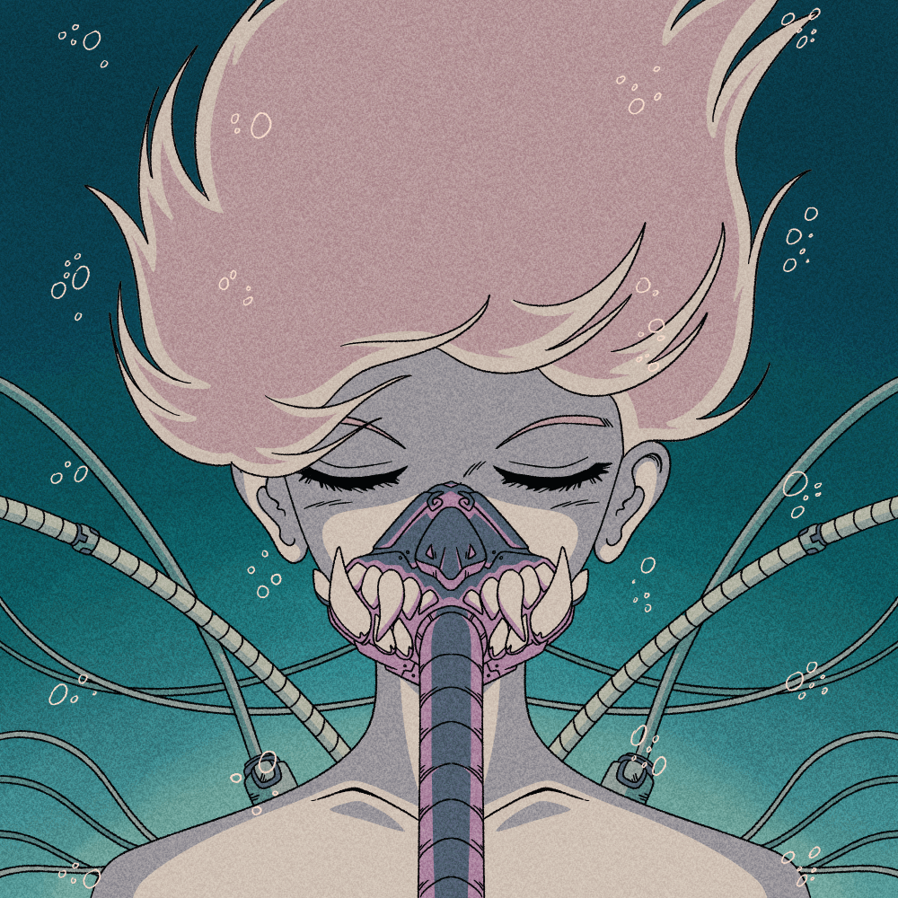 Aurora Capsules Aurora Capsules 是即将推出的 NFT Collection Super Space Defenders 的 Genesis 系列。指挥官 Minerva Bellatrix 从 Yamamoto 家族手中偷走了 1,111 个。 这些胶囊将在特殊活动期间分配给最忠诚和最有才华的士兵。 每个胶囊都充当薄
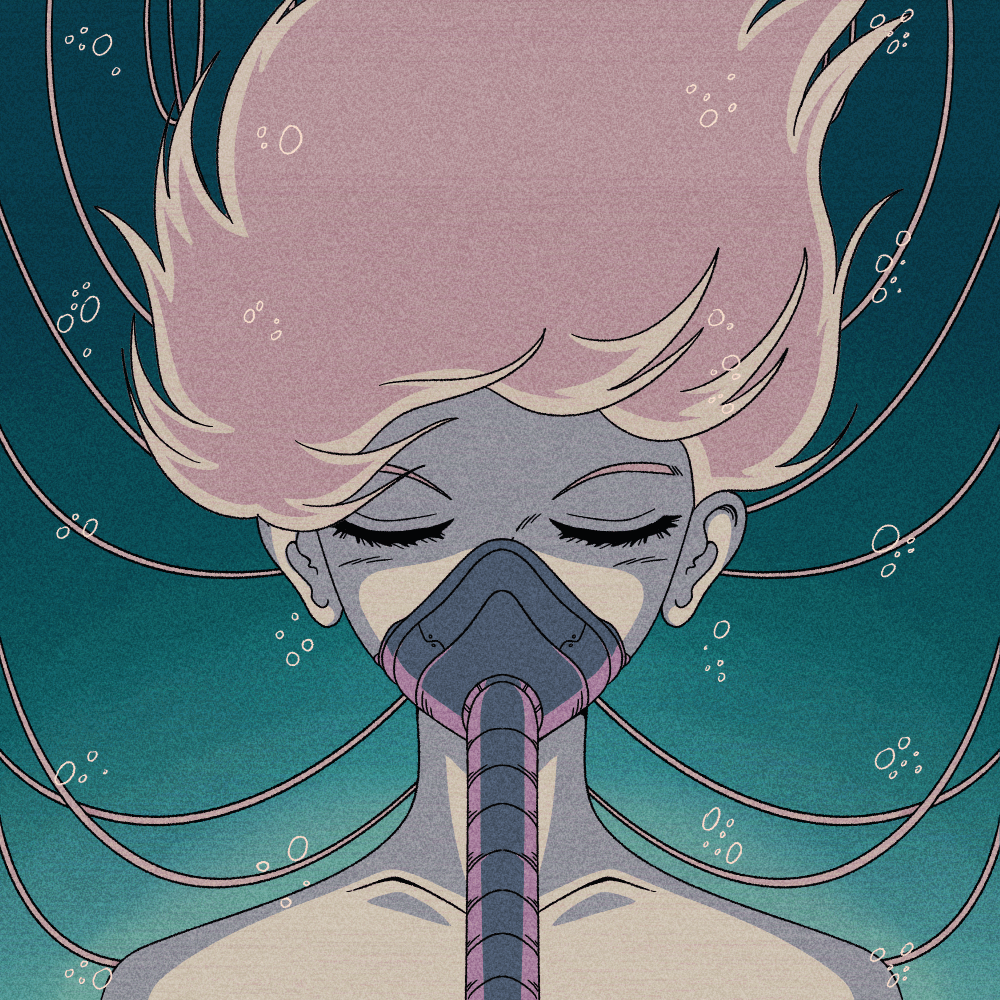 AuroraCapsules Aurora Capsules 是即将推出的 NFT Collection Super Space Defenders 的 Genesis 系列。指挥官 Minerva Bellatrix 从 Yamamoto 家族手中偷走了 1,111 个。 这些胶囊将在特殊活动期间分配给最忠诚和最有才华的士兵。 每个胶囊都充当薄
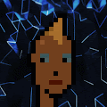 Authentic Punks Authentic Punks 是朋克 PolyChain 的生成集合。 2011/01/18 · 本论文探讨了被选中的参与者是如何参与到 DiY 朋克文化中的，他们在其中做了什么，以及如果他们这样做了，他们是如何退出文
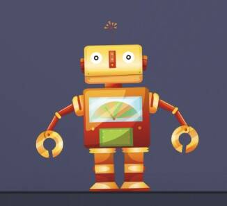 Auto Mint App 薄荷是活的！ AutoMint 是一种高级机器人，可根据您指定的标准自动铸币。 AutoMint 允许您在不使用计算机的情况下制作安全的薄荷糖。 AutoMint 是一种高级机器人，可根据您指定
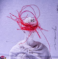 AUTOCOLOR ART 2500 NFT 免费！ 由人类算法制作和随机化。 0%的版税，只有真正的美学。 什么是AUTOCOLOR ART？ AUTOCOLOR ART 是一个 NFT（不可替代令牌）集合。 存储在区
Automaton 以太坊区块链上五十个独特的元胞自动机实例。 这些确定性模拟是从具有各种随机调色板的种子群体生成的。 Automaton Soldiers Project 是 WW10 中的一个科学项目，之后从未使用过，
AV Alpha 艺术家 Franceso Guilberdegeno 的限量 AV Alpha AV Alpha NFT - 常见问题（FAQ） ▶ 什么是 AV Alpha？ AV Alpha 是一个 NFT（Non-fungible token）集合。 存储在区块链
AV Editions - 1155 通过 Manifold ERC-1155 合同铸造的版本产品集合。 各种图像。 AV Editions NFT 在过去 7 天内售出 3 次。 AV Editions 的总销售额为 128.44 美元。 一个 AV Editions NFT 的平均价格为 42.8 美元。 有 18 个 AV 版本所有
AV Yacht Club AV Yacht Club NFT 在过去 7 天内售出 241 次。 AV Yacht Club 的总销售额为 $27.45k。 一个 AV Yacht Club NFT 的平均价格为 113.9 美元。 共有 2,801 名 AV Yacht Club 所有者，总供应量为 10,000 个代币。 AVYC
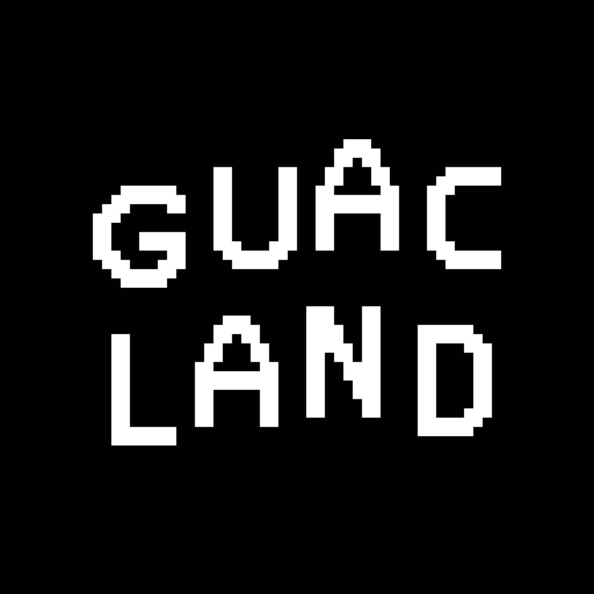 Avacadoez 7777 AVOCADOEZ 准备成为鳄梨酱 鳄梨酱和所有 vibez！ 鳄梨准备在 GuacLand 发芽 经过关岛主_ 9999 AVOCADOEZ 准备成为鳄梨酱，没有不和谐，没有承诺，只有鳄梨酱和所有 vibez！
AvaPunks Unofficial 经过 耶特佩AvaPunks 是由 Infinity Tokens + IPFS 提供支持的定制认证非官方朋克。这意味着，“WE ON-CHAAAAIN，BABY！” #onchaingang 一旦 AvaPunk 被铸造出来，
AvaPunks Unofficial 经过耶特佩 AvaPunks 是由 Infinity Tokens + IPFS 提供支持的定制认证非官方朋克。这意味着，“WE ON-CHAAAAIN，BABY！” #onchaingang 一旦 AvaPunk 被铸造出来，它就会出售给它
Avarik Armor 盔甲的稀有度类似于 Avarik Heroes 本身的模型。 盔甲有 4 种稀有度。 稀有性影响游戏中的 2 个关键原则： 更高的护甲基础数据。 增强英雄主动和被动技能的技能威力。 盔
Avarik Weapons 武器和盔甲的稀有度类似于 Avarik Heroes 本身的模型。 武器和盔甲有 4 种稀有度。 稀有性影响游戏中的 2 个关键原则： 武器和盔甲的基础属性更高。 增强英雄主动和被动
Avenged Sevenfold Concert Tickets Aveged Sevenfold 演出的门票。 请在购买前阅读说明并在 avengedsevenfold.io 上回复以进行兑换。 没有 RSVP 将不会授予参赛资格。 在过去的 7 天里，NFT 的七重奏演唱会门票被售出 3 次。 Avenged Sevenfold
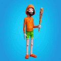 AveragePunks 平均朋克是 4200 个随机生成的 3D 角色，作为 ERC-721 令牌在以太坊区块链周围进行朋克，并托管在 IPFS 上。 完整的角色很快就能上传到 DCL。 元界见！Genesis 合
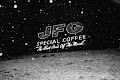 Avery Adzima - A Night In The Snow 田纳西州诺克斯维尔很少见到足以覆盖地面超过几个小时的积雪。 2022 年 1 月，一场短暂的暴风雪袭击了东海岸，让我得以走出去，在罕见的大雪下拍摄了诺克斯
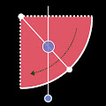 AVLab B-side AVLab 是艺术家 Aluan Wang 的视听实验。 当由算法触发时，两种不同的媒体（音频和视频）会创建一个迷人的组合，让观众产生更令人兴奋的感知。 AVLab B 端 NFT - 常见问题（
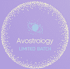 Avostrology 牛油果被列为十二生肖。 占星术 NFT - 常见问题（FAQ） ▶ 什么是占星术？ Avostrology 是一个 NFT（不可替代代币）集合。 存储在区块链上的数字艺术品集合。 ▶ 有多
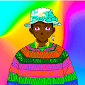 AVOTARS 由 https://opensea.io/AvolabAVOTARS 创建，是生活在以太坊区块链上的 10.000 个独特生成的角色的集合。 时尚、娱乐、去中心化金融和游戏共同为 AVOVERSE 赋予生命，这是一个能够提供真实生活体验和数
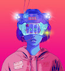 avril15.eth thank you 感谢我们的前 1000 名 Discord 成员和提交粉丝艺术的人。拥有这件作品可以让持有者进入 Discord 服务器中的抽奖和赠品。 avril15.eth 感谢 NFT 在过去 7 天内售出 4 次。 avril15.ethThank you 的总销售额为
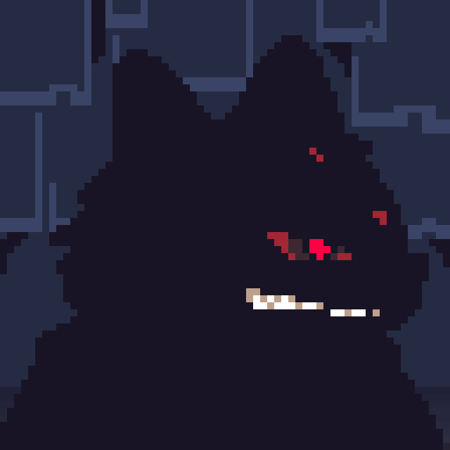 Awakened Kuma Boss | Phase 2 Kuma Boss NFT 第 2 阶段现在唤醒你的 Kuma Boss 力量！ 保护您的家人，为费拉图玛大战做好准备！ Kuma Boss NFT 第二阶段。 现在唤醒你的熊老板的力量！。 保护您的家人，为费拉图
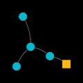 Axie Generations Axie Generations 代表从每个 Origin Axie 培育的前 7 代。 正如我们所知，最初的几代人开始了 play-2-earn 运动。 每块的原点轴是一个正方形，是其他点的两倍，你能找到吗？ 铸就您的 Axie 历史
Axion Collider 有机会将您的 Axion Particles NFT 转换为 Axion Particle Collider 上的实际 AXN 代币！ 每个 NFT 都包含一定数量的粒子，当参与 Collider 时，这些粒子可以在您设置的持续时间内变成质押的 AXN。 他们
BearlyPandaOfficial Bearly Panda 是社区驱动的以太坊区块链上 8,000 个随机生成的 NFT 集合。Bearly Panda 从 NFT 化身开始，让用户可以访问 Pandaverse：享受游戏、土地，并共同创
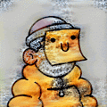 DoodlesAI Space Doodles 是您进入银河系的第一次冒险，以发现快乐和彩虹呕吐。这是向收藏家展示我们的宇宙的第一步，它拥有由 Burnt Toast 设计的数十艘宇宙飞船。 你的涂鸦在寻找什
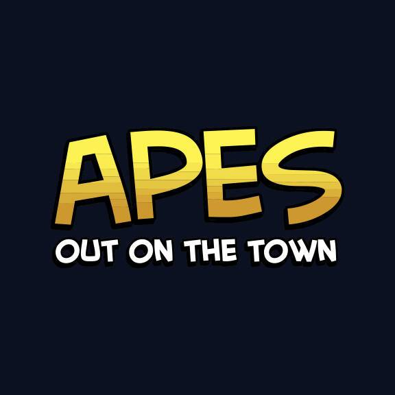 Elite Ape Comic: Apes Out on the Town PUNKS Comic 与您最喜欢的无聊猿合作，发布 Apes Out on the Town！ 在他们不断寻求解闷的过程中，一小群猩猩前往起源城，在镇上度过了一个夜晚。 PUNKS #2 的读者会认出 H
GAS FREE Sports Animations ▶ 什么是 GAS FREE 运动动画？ GAS FREE Sports Animations 是一个 NFT（非同质代币）集合。存储在区块链上的数字艺术品集合。 ▶ 有多少 GAS FREE Sports Animations 代币？ 总共有 21 个 GAS FREE Sports Animations NFT
LARVA ANIVERSE Aniverse NFT 通过自己的 PFP NFT 作为角色参与到 角色 元宇宙“Aniverse”中，来自各种作品的角色聚集在一起。 我们提供游戏、NFT、Staking、治理参
Legends of Atlantis NFT Official Presale 官方账号 Legends of Atlantis 经 OpenSea™ 认证独家多边形预售，仅限 1000 件！ 潜入亚特兰蒂斯，这座失落的城市被提升为令人叹为观止的元宇宙。 一个探索和幻想盛行
Legends of Atlantis Official Presale NFT 亚特兰蒂斯这个伟大的岛国曾经是一个占主导地位的先进海军强国，居住着半神半人的人，他们在一个技术和魔法合二为一的社会中享受着郁郁葱葱、富裕的生
Light and Dark by Phil Bosua Light and Dark 是 AI 艺术家 Phil Bosua 的创世纪系列。100 件独特的 AI 生成艺术品。 “总是有光明和黑暗。光明是爱，黑暗是缺乏爱。作为个人，我们必须在成熟和正直的自
Nirvana Under a million Stars Editions 阿伦·赫格登 (Arun Hegden) 于 2018 年 6 月 14 日，在喜马拉雅山的一个寒冷夜晚，海拔 14,500 英尺以上，创作了这张佛像的单次曝光。版本大小：20 个自己的智能合约 百万星之
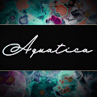 The Aquatica Collection 由花式水晶。 一系列独特的艺术品，由流动的丙烯酸和水墨画创作而成，然后经过手工细节和数字处理。 Aquatica 是对自然界中发现的生物形态和纹理的庆祝，特别是
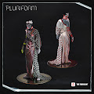 The Atari Pluriform - by The Fabricant 经过 雅达利 The Fabricant 与 Atari 合作设计的 Pluriform 系列倡导性别多样性和数字时尚空间的包容性，我们可以在其中超越物理世界的限制。 凭借电子竞技和游戏的这种敏感性，我
The Auerbach Collection. The Process Series. Captured Moment：Master’s Process 将包含两个 NFT drop：一个用于 Process 照片，它揭示了 Master 作品制作过程中所涉及的微妙幕后构造，另一个用于
ABCMETA-VOUCHER 使用您的 NFT 赚取奖励 NFT 市场，交易您的 NFT 并赚取利润。通过Bid-to-Earn赚取USDT。 Mint ABCMETA-ID - 您独特的像素化 NFT。竞标 ABCMETA-LA
Abducting Mfers Depolyer V2 绑架集体：v2 NFT 在过去 7 天内售出 89 次。 绑架集体：v2 的总销售额为 5.61 万美元。 一个被绑架的集体：v2 NFT 的平均价格为 63 美元。 有 1,208 个绑架集体：v2 所
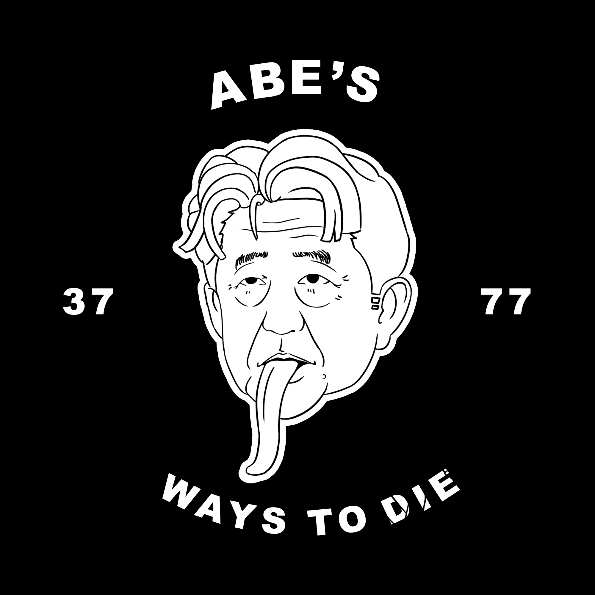 Abe's 3777 ways to die 安倍的 3777 种死亡方式 NFT，住在以太坊，现在免费薄荷 总供应量 3777，每个钱包限制 5 个 NFT 铸造一个NFT你将获得10亿ABECoin ABECoin 总供应量 37770
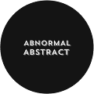 Abnormal Abstract 具有 4k 图像的抽象 PFP 项目没有推特没有路线图只有 4k 抽象的 过去 7 天内没有出售异常摘要。 具有 4k 图像的抽象 PFP 项目 没有推特没有路线图只有 4k 摘要 什么是异常